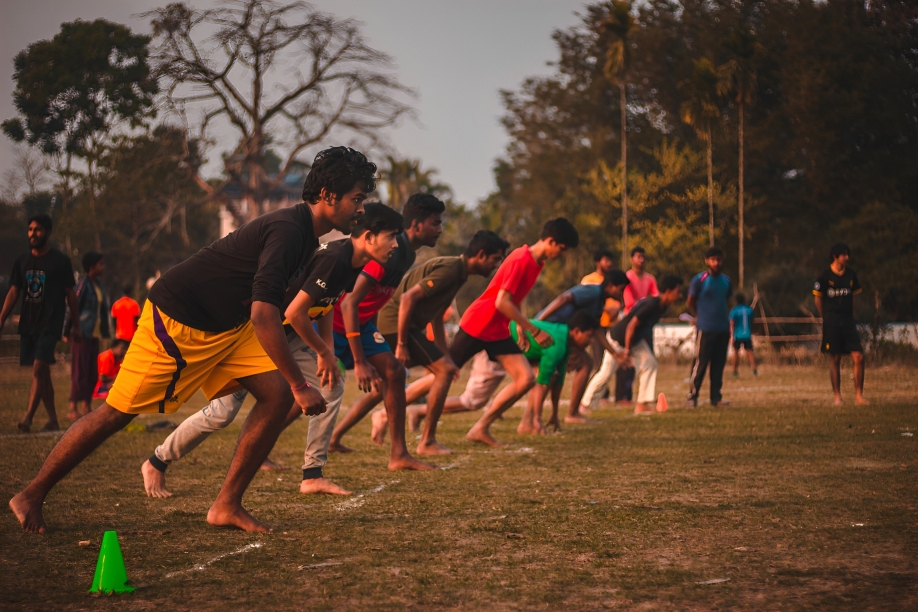

ABOUT US
 “SPORTRIX” (Sports for all) is not only a cell or club of Kalyani Government
Engineering
College, It
is
a
bright initiative By Our honourable Sports faculty members of our college. The main focus of
SPORTRIX is
to unite our college in a single bond and provides everyone a brighter life with a healthy body.
KGEC
Sportrix is the sports cell of the numerous extra-curricular and co-curricular activities in
Kalyani
Government Engineering College ranging from sports to socio-cultural. The Sportrix is managed by
the
students, for the students, under the guidance and active participation of the faculty and staff
members.
Sports is one of the most fundamental thing of our daily life for human beings. Sports and games
are
very important for the physical and mental development of a person. They have several positive
effects
like, increased blood flow, improved concentration and thinking ability, among others. There is
a
difference between sports and games. Sports can only be played outdoors while games can be
played
indoors also. Outdoor sports are sports that are played outside it an open space. Outdoor sport
has
many
benefits. Outdoor sports includes running, jumping etc. Which increase our blood flow. Outdoor
sports
keep a person healthy fit. As it increases the blood flow the heart constantly pumps blood which
makes
the heart strong. Outdoor sports includes a lot of physical exercise which helps to lose weight
&
Keep
the body fit both externally & internally, while playing outdoor sports we can be with natures,
in
hailing the fresh air which rejuvenates our body. The sunlight acts at Vitamin D for the body
Outdoor
sports highly increases the stamina of a person. Indoor Games are of great way of spending time
with
great fun and entertainment. There are countless indoor games each having different advantages.
For
students and children Indoor Games be promoted to sharpen their intellect and insight.
Just like a diet of healthy nutrients is needed for nourishing the body, playing sports holds a great
significance in enhancing our lives, especially for growing children. As a student, one has to face many
challenges, and playing sports helps them cope with the exam pressure and prepare them for further
challenges by providing them with physical and mental strength.
Children who are indulged in physical activities sustain good values of mutual respect and cooperation.
Playing sports teaches them skills such as accountability, leadership, and learning to work with a sense of
responsibility and confidence.
In today's era of excessive competition and changing environment, people barely care about our health and
have to face its consequences in the later stages of their life. They easily become prey to many
life-threatening health issues. Those who are indulged in regular physical activities can easily defend
themselves from such diseases. Therefore, playing sports can resolve this concern.
Playing regular sports can help maintain diabetes, improve heart function, and reduce stress and tension in
an individual.